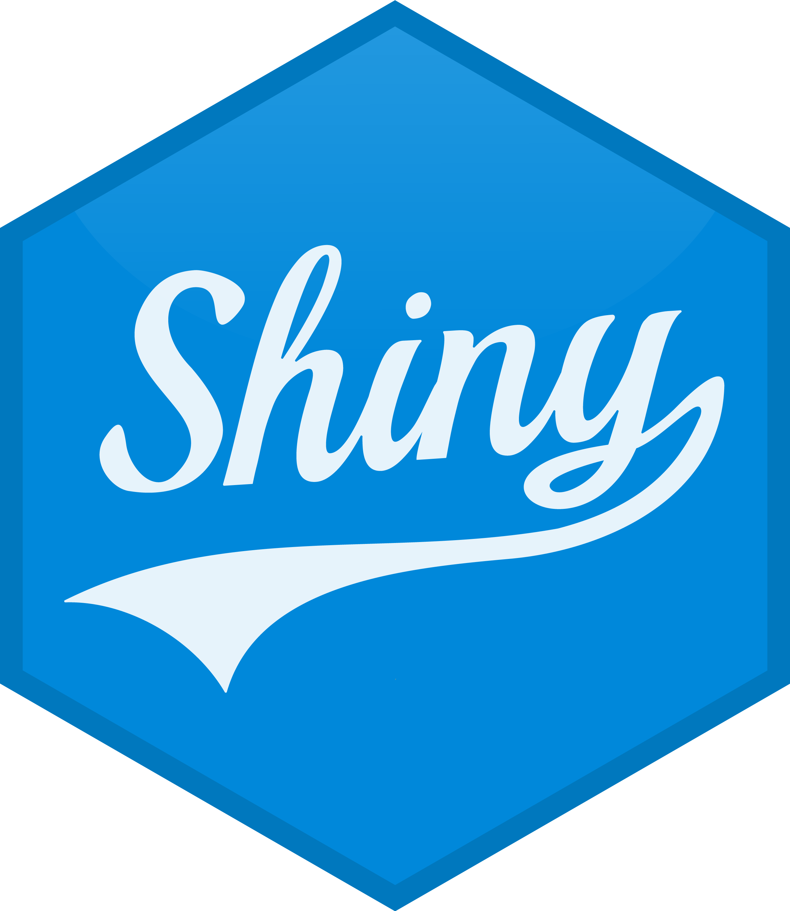

library(tidyverse)Project 4
project 4
projects
Building static and interactive dashboards
Background
Due date: December 23 at 11:59pm
The goal of this assignment is to practice building interactive dashboards and building effective data visualizations to communicate to an audience.

To submit your project
Create a public github repository for yourself. The link to create the repository will be in CoursePlus.
Follow the instructions below and push all your code to this github repository.
Then, you will also need to deploy your dashboard. As an example, here is a deployed interactive dashboard from the lecture we had on dashboards.
You must include a
README.mdin your github repository with your source code that includes a link to your deployed dashboard.
Part 1: Identify the data
Pick a dataset from one of the datasets that you used in Project 3. You can also pick a different dataset if you wish, but to help minimize work in this project, you are encouraged to pick a dataset that you already are familiar with from Project 3.
Once you identify the dataset, save the data locally in your project repository to be able to load into R:
- In this step, you must test if a directory named
dataexists locally. If it does not, write an R function that creates it programmatically.
- Save the data only once.
- Read in the data locally each time you knit/render.
Part 2: Design the interactive dashbard
Using the data analysis that you created from Project 3, think about the following topics and questions from Project 3. You do not have to formally answer any the questions right now, but use them to help design your dashboard.
- Motivation and Overview: What are the goals and motivation of the data analysis?
- Related Work: Anything that inspired you, such as a paper, a web site, or something we discussed in class.
- Data Analytic Questions: What question(s) are you trying to answer with the data and data analysis? Did the questions change as you began to explore the data? What new questions did you consider in the course of your analysis? What variables seemed important or not important?
- Audience: Who is the target audience for your analysis? Should they be expected to have a specific background or knowledge?
- Data: What are the original data sources? Is there a data dictionary or did you create a table yourself?
- Exploratory Data Analysis: What visualizations did you use to look at your data in different ways? Did you consider statistical models (e.g. inference or prediction)? How did you decide? Were there any major changes to your ideas? How did you reach these conclusions?
- Data visualization: What data analytic components (e.g. tables, plots, etc) would be useful to show in a static format versus an interactive format?
- Narrative and Summary: What did you learn from the data and data analysis? How did you answer the questions? How can you justify your answers? What are the key/important takeaways for the audience? What are the limitations of the analyses?
Part 3: Build an interactive dashboard
Build an interactive dashboard with the following criteria. Outside of the following criteria, create a dashboard that effectively communicates the key ideas about the data or data analysis. You are strongly encouraged to spend time exploring flexdashboard and shiny to customize your dashboard beyond the following criteria. You are welcomed to get inspired by dashboards you find online or the one we discussed in class:
Specific criteria your dashboard must have:
Abouttab: This must describe the purpose of the dashboard and a link or original location of the data.The Datatab: A description of the data along with a table of the dataset similar to the one we discussed in class.- Two tabs with static content. Within one of the tabs for the static content, there must be additional tabs.
- Two tabs with interactive content. One of these tabs need to include some type of interactive plots. The other tab can be any other type of interactive content.
Analysistab. This tab should contain the analysis you built for Project 3.
Part 4: Make a two minute video
Make a two minute (max!) screencast with narration showing highlights of your data analysis and a demo of your dashboard. There are several ways to do this, but one way is to join a zoom room, share your screen, and record yourself. When you are done, upload the video to YouTube or Vimeo and embed it into the dashboard.
Tip
There are several ways to do this, but I like to embed an iframe into the .Rmd
Use principles of good storytelling and presentations to get your key points across.
- Focus the majority of your screencast on your main contributions rather than on technical details.
- What do you feel is the best part of your data analysis and dashboard?
- What insights did you gain?
- What is the single most important thing you would like your audience to take away? Make sure it is upfront and center rather than at the end.
Part 5: Deploy dashboard and push code to Github
Using the public github repository that you created from CoursePlus, push your source code for this dashboard to GitHub.
Deploy the website using shinyapps.io. As an example, here is a deployed interactive dashboard from our lecture on dashboards.
Include a
README.mdfile in the GitHub repository with your name and a link to the deployed dashboard.
Share a link to your github repo with your code and your deployed interactive dashboard on CoursePlus.